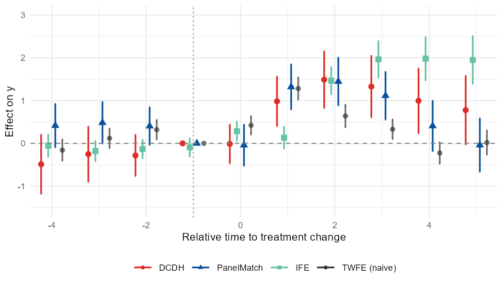
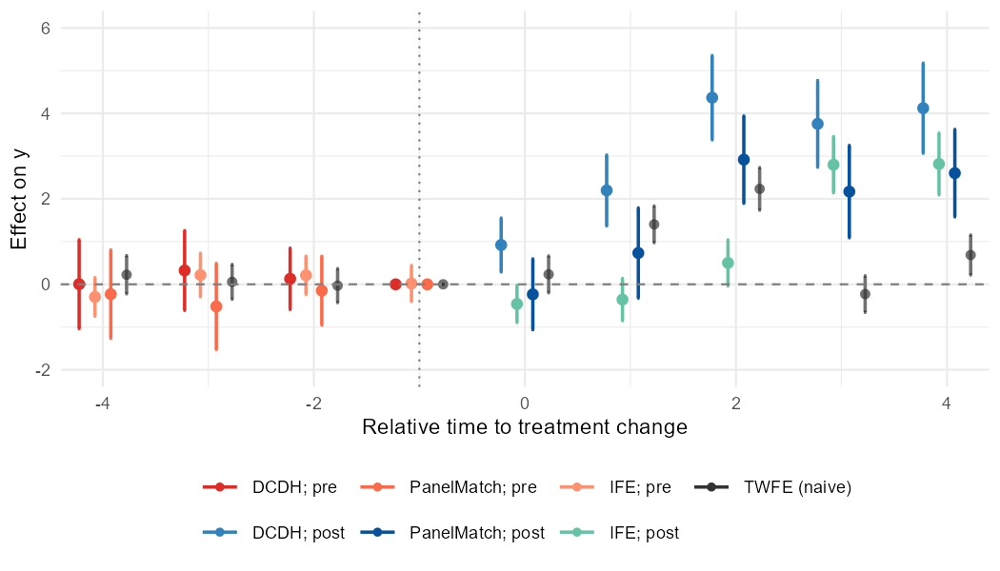

nonabsdid provides three things on top of the
heterogeneity-robust DiD estimators that already exist in R:
- A unified front door,
nabs_event_study(), that runs DCDH, PanelMatch, or any of thefectfamily (FE / IFE / MC) with a common argument set. - An S3 generic,
as_nabs_event_study(), that converts each estimator’s native output into a tidy tibble with a stable schema. - A plotting function,
nabs_event_plot(), that overlays any combination of those tidy objects on a single ggplot2 panel, with an optional naive TWFE reference series.
Plus a one-line shortcut, nabs_event_study_simple(),
that runs all three heterogeneity-robust estimators with sensible
defaults and gives you a single overlay plot — meant for the very first
look at the data.
The estimator packages themselves (DIDmultiplegtDYN,
PanelMatch, fect, fixest) are
suggested, not required, so install only the ones you
plan to use.
A finished plot looks like this — several heterogeneity-robust estimators and the naive TWFE reference on one panel:

The 30-second version
res <- nabs_event_study_simple(sim,
outcome = "y", treatment = "d",
unit = "id", time = "t")
res$plotThat’s it. Window lengths are auto-picked from the panel. All available heterogeneity-robust estimators run (skipped silently if their package isn’t installed), the naive TWFE reference is overlaid in grey, and you get a single figure to inspect.
For everything below — picking specific estimators, wider control over options, comparing FE vs IFE vs MC — read on.
A simulated panel
We simulate a panel with non-absorbing treatment so that all three
estimators have something to chew on. Half of the units turn on at
t = 10 and half of those turn back off at
t = 16.
set.seed(2026)
N <- 80; TT <- 24
sim <- expand.grid(id = seq_len(N), t = seq_len(TT))
# Treatment switches on at t=10 for ids <= N/2, and off at t=16 for ids <= N/4.
sim$d <- with(sim, as.integer(
(id <= N/2 & t >= 10 & !(id <= N/4 & t >= 16))
))
# Heterogeneous, time-varying effect: 1 for early, 0.5 for late.
sim$tau <- with(sim, ifelse(id <= N/4, 1.0, 0.5))
sim$y <- with(sim, 0.05 * id + 0.03 * t + d * tau + rnorm(nrow(sim), sd = 0.3))Three estimators, three lines of code
res_dcdh <- nabs_event_study(sim, outcome = "y", treatment = "d",
unit = "id", time = "t",
method = "DCDH", lags = 4, leads = 6)
res_pm <- nabs_event_study(sim, outcome = "y", treatment = "d",
unit = "id", time = "t",
method = "PanelMatch", lags = 4, leads = 6)
res_ife <- nabs_event_study(sim, outcome = "y", treatment = "d",
unit = "id", time = "t",
method = "IFE")Each nabs_event_study() return is a list with
tidy (an nabs_event_study_tbl),
fit (the native estimator object, for diagnostics), and
call.
Or call the estimators directly
If you want full control of estimator-specific options, call the underlying package and tidy the result:
fit <- DIDmultiplegtDYN::did_multiplegt_dyn(
df = sim, outcome = "y", group = "id", time = "t",
treatment = "d", effects = 6, placebo = 4,
cluster = "id"
)
tidy_dcdh <- as_nabs_event_study(fit, outcome = "y")For PanelMatch, remember to pass the placebo result via
pre_obj:
panel <- PanelMatch::PanelData(sim, "id", "t", "d", "y")
pm <- PanelMatch::PanelMatch(panel.data = panel, lag = 4, lead = 0:6,
refinement.method = "ps.match",
size.match = 10, qoi = "att",
placebo.test = TRUE,
forbid.treatment.reversal = FALSE)
pe <- PanelMatch::PanelEstimate(pm, panel.data = panel)
pl <- PanelMatch::placebo_test(pm, panel.data = panel, plot = FALSE)
tidy_pm <- as_nabs_event_study(pe, pre_obj = pl)Naive TWFE reference
For a visual baseline, fit a naive TWFE event study with
fixest:
ref <- naive_twfe(sim, outcome = "y", treatment = "d",
unit = "id", time = "t",
lags = 4, leads = 6)The reference is the leads and lags of the treatment (a distributed-lag specification in levels), defined relative to a treatment change rather than to a single absorbing onset, so it handles the on/off treatment simulated above rather than assuming a single absorbing onset. It is still intended only as a reference: it is not robust to treatment-effect heterogeneity – which is the point. Showing it next to the robust estimators makes the correction visible.
Plot
nabs_event_plot(
res_dcdh$tidy, res_pm$tidy, res_ife$tidy,
reference = ref,
xlim = c(-4, 6),
ylim = c(-1, 2),
ylab = "Effect on y"
)
The reference series is drawn in grey20 (configurable
via reference_color) and dashed, so it sits visually behind
the main estimators. Pre-treatment periods get round markers;
post-treatment get triangles. Each method gets its own color pair; the
default palette is patterned after the conventions in applied
DCDH/PanelMatch papers, with red shades pre and blue/green post.
Plot styles
nabs_event_plot() offers two ways to encode the pre/post
distinction, plus an option to join point estimates with a thin line.
With style = "method_shape", color encodes the
method only and the pre/post split is carried by marker shape
(hollow circles pre, filled triangles post), which reads cleanly in
grayscale:

nabs_event_plot(res_dcdh$tidy, res_pm$tidy, res_ife$tidy, reference = ref,
style = "method_shape")Set connect = TRUE (works with either style) to join
each series’ point estimates with a thin line through the full path:

nabs_event_plot(res_dcdh$tidy, res_pm$tidy, res_ife$tidy, reference = ref,
style = "method_shape", connect = TRUE)Schema
Every tidier returns a tibble with the same columns:
| column | type | description |
|---|---|---|
time |
int | Relative period (0 = treatment onset). |
estimate |
num | Point estimate. |
std.error |
num | Standard error (may be NA). |
conf.low |
num | Lower CI bound. |
conf.high |
num | Upper CI bound. |
window |
chr |
"pre" if time < 0, else
"post". |
method |
chr |
"DCDH", "PanelMatch", "IFE",
"TWFE", or custom. |
outcome |
chr | Outcome variable name. |
Anything you can coerce to a data frame with at least
time and estimate columns can also flow
through as_nabs_event_study(). This makes it easy to plug
in additional estimators later – write a one-line method that pulls the
right slots, and the plotting code keeps working.